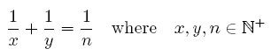
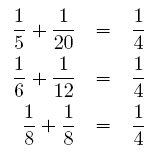

在学习循环控制结构的时候，我们经常会看到这样一道例题或习题。问n！末尾有多少个0？POJ 1401就是这样的一道题。
【例1】Factorial （POJ 1401）。
Description
The most important part of a GSM network is so called Base Transceiver Station (BTS). These transceivers form the areas called cells (this term gave the name to the cellular phone) and every phone connects to the BTS with the strongest signal (in a little simplified view). Of course, BTSes need some attention and technicians need to check their function periodically.
ACM technicians faced a very interesting problem recently. Given a set of BTSes to visit, they needed to find the shortest path to visit all of the given points and return back to the central company building. Programmers have spent several months studying this problem but with no results. They were unable to find the solution fast enough. After a long time, one of the programmers found this problem in a conference article. Unfortunately, he found that the problem is so called "Travelling Salesman Problem" and it is very hard to solve. If we have N BTSes to be visited, we can visit them in any order, giving us N! possibilities to examine. The function expressing that number is called factorial and can be computed as a product 1.2.3.4....N. The number is very high even for a relatively small N.
The programmers understood they had no chance to solve the problem. But because they have already received the research grant from the government, they needed to continue with their studies and produce at least some results. So they started to study behaviour of the factorial function.
For example, they defined the function Z. For any positive integer N, Z(N) is the number of zeros at the end of the decimal form of number N!. They noticed that this function never decreases. If we have two numbers N1 < N2, then Z(N1) <= Z(N2). It is because we can never "lose" any trailing zero by multiplying by any positive number. We can only get new and new zeros. The function Z is very interesting, so we need a computer program that can determine its value efficiently.
Input
There is a single positive integer T on the first line of input. It stands for the number of numbers to follow. Then there is T lines, each containing exactly one positive integer number N, 1 <= N <= 1000000000.
Output
For every number N, output a single line containing the single non-negative integer Z(N).
Sample Input
6
3
60
100
1024
23456
8735373
Sample Output
0
14
24
253
5861
2183837
（1）编程思路1。
n！是一个很大的数，不能将其求出后，再统计其末尾0的个数。由于10=2*5，且n!中因子2的个数一定超过因子5的个数。一个很容易想到的办法是：对于1、2、3、…、n中的每一个数i求5的因子个数，然后将所有5的因子个数加起来就是n！中末尾0的个数。
如何求一个数x含有的5的因子个数呢？可以写成一个简单的循环。
cnt=0;
while (x%5==0)
{
cnt++; // x能被5整除，含有一个因子5，计数
x=x/5; // 商有可能还含有因子5
}
这样，一个容易想到的解决办法的程序可写成一个二重循环，外循环控制从1~n，表示参与n!计算的每个数，内循环对每个数，求其含有5的因子个数。
（2）源程序1-1。
#include <stdio.h>
int main()
{
int t,n,cnt,i,x;
scanf("%d",&t);
while(t--)
{
scanf("%d",&n);
cnt=0;
for (i=1;i<=n;i++)
{
x=i;
while (x%5==0)
{
cnt++;
x/=5;
}
}
printf("%d\n",cnt);
}
return 0;
}
这个源程序可以正确运行，但将其提交给 POJ 1401 “Factorial” 时，评测系统给出的结论是：
Time Limit Exceeded。超时了，说明程序的效率不高。
有些同学想到，源程序中外循环 for (i=1;i<=n;i++) 从1~n。但是1、2、3、4等不是5的倍数的数不可能含有5的因子呀，因此可将外循环修改为 for (i=5;i<=n;i+=5) ，效率显然会提高些。毕竟外循环次数只有原来的五分之一。但将其再提交给 POJ 1401 “Factorial”，评测系统给出的结论仍然是：Time Limit Exceeded。
显然，要想不超时，可能的解决方法是将二重循环降成单重循环。如何做呢？
（3）编程思路2。
以求100！为例说明。
设先将1~100共100个数排成一行得到序列1。且设保存5的因子个数的变量cnt的初值为0。
序列1: 1 2 3 4 5 6 7 8 9 10 …… 21 22 23 24 25 ……95 ……99 100
在序列1中，只有 5、10、15、……、99、100 共 100/5=20个数中至少含有一个5的因子。故cnt=cnt+n/5=0+20=20。
将序列1中的每个数除以5，只保留得到的整数，可排成序列2。（对应操作为n=n/5）
序列2： 1 2 3 4 5 6 7 8 9 10 11 12 13 14 15 16 17 18 19 20
对应序列1的数为：5 10 15 20 25 30 35 40 45 50 55 50 65 60 75 80 85 90 95 100
在序列2中，有20个数，只有20/5=4个数含有因子5，即原序列中有4个数（25,50,75,100）至少含有两个因子5。 cnt=cnt+n/5=20+20/5=24。
再将序列2中的每个数除以5，只保留得到的整数，可排成序列3。（对应操作为n=n/5）
序列2： 1 2 3 4
对应序列1的数为：25 50 75 100。
此时，序列3中不再有数能被5整除，即原序列中没有数含有3个5的因子。
cnt=cnt+n/5=24+4/5=24。
至此，求得100！末尾有24个0。
（4）源程序1-2。
#include <stdio.h>
int main()
{
int t,n,cnt;
scanf("%d",&t);
while(t--)
{
scanf("%d",&n);
cnt=0;
while (n/5!=0)
{
cnt=cnt+n/5;
n/=5;
}
printf("%d\n",cnt);
}
return 0;
}
提交给 POJ 1401 “Factorial” 时，评测系统给出的结论是：Accepted。
这个问题可以变形为较多的问题。例如，求n!能被7的最高多少次方整除？（由于7是一个质数，所以求得n！中含有因子7的个数就是问题的答案。）；求n!能被9的最高多少次方整除？（由于9=3*3，因此不能直接求含有因子9的个数，先求出含有因子3的个数，再将得到的个数除以2取整就是问题答案。）
POJ中问题2992 “Divisors”与例1的解决思路有关，但复杂得多。它求的是组合数c(n,k)的约数的个数，而组合数c(n,k)=n!/[(n-k)!*k!]，因此问题会转化为求n!中各素因子的个数。为解决POJ 2992这个问题，我们通过例子的形式先逐步解决一些相关的简单问题。
【例2】约数的个数。
输入正整数n，求n的约数的个数。例如，输入24，24的约数有1、2、3、4、6、8、12、24共8个，因此输出8。
（1）编程思路。
最直接和简单的思路是用一个循环，将i从1~sqrt(n)逐个试探，若n%i==0，则i是n的约数，n/i也是n的约数，约数个数增加2个。需要注意n是一个完全平方数的情况，此时约数个数只增加1。
（2）源程序。
#include <stdio.h>
int main()
{
int n,cnt,i;
while (scanf("%d",&n) && n!=0)
{
cnt=0;
for (i=1; i*i<n; i++)
{
if (n % i==0)
cnt+=2;
}
if (i*i==n) cnt++;
printf("%d\n",cnt);
}
return 0;
}
【例3】分解质因数。
将一个正整数分解质因数。例如：输入90，输出 90=2*3*3*5。
（1）编程思路1。
对整数n进行分解质因数，应让变量i等于最小的质数2，然后按下述步骤完成：
1）如果i恰等于n，则说明分解质因数的过程已经结束，输出即可。
2）如果n<>i，但n能被i整除，则应输出i的值，并用n除以i的商，作为新的正整数n，转第1）步。
3）如果n不能被i整除，则用i+1作为新的i值，转第1）步。
因此，程序主体是一个循环，在循环中根据n能否整除i，进行两种不同处理。
（2）源程序3-1及运行结果示例。
#include <stdio.h>
int main()
{
int n,i;
while (scanf("%d",&n) && n!=0)
{
printf("%d=",n);
i=2;
while(i<n)
{
if(n%i==0)
{
printf("%d * ",i); // i是n的因数，输出i
n=n/i; // 对除以因数后的商再进行分解
}
else
i++; // 找下一个因数
}
printf("%d\n",n);
}
return 0;
}
运行源程序3-1，一个可能的运行示例如下：
90
90=2 * 3 * 3 * 5
120
120=2 * 2 * 2 * 3 * 5
0
从上面的运行示例可以看出，120分解质因数后，其因子2有3个，3有1个，5有1个。如果要求 输出形式为： 120=2^3 * 3^1 * 5^1，怎么修改呢？
（3）编程思路2。
源程序3-1中，在循环处理时若i是当前n的因子，立即输出因子，由于相同因子可能有多个，因此在每个因子输出前需要用一个循环对含因子i的个数进行统计，统计完后再输出。
并且为了方便后面使用，程序中将因子及其相应个数均用数组保存起来。
（4）源程序3-2及运行示例。
#include <stdio.h>
int main()
{
int n,i,cnt,len;
int p[100],e[100];
while (scanf("%d",&n) && n!=0)
{
printf("%d=",n);
len=0;
for (i=2; i*i<=n && n>1; i++)
{
if (n % i==0) // i是n的因子
{
cnt = 0;
while(n % i==0)
{
n /= i;
cnt++;
}
p[len]=i; // 保存因子i
e[len++]=cnt; // 保存因子i的个数
}
}
if (n>1) { p[len]=n; e[len++]=1; }
for (i=0;i<len-1;i++)
printf("%d ^ %d * ",p[i],e[i]);
printf("%d ^ %d\n",p[len-1],e[len-1]);
}
return 0;
}
运行源程序3-1，一个可能的运行示例如下：
90
90=2 ^ 1 * 3 ^ 2 * 5 ^ 1
120
120=2 ^ 3 * 3 ^ 1 * 5 ^ 1
0
【例4】Diophantus of Alexandria（POJ 2917）。
Description
Diophantus of Alexandria was an Egypt mathematician living in Alexandria. He was one of the first mathematicians to study equations where variables were restricted to integral values. In honor of him, these equations are commonly called Diophantine equations. One of the most famous Diophantine equation is xn + yn = zn. Fermat suggested that for n > 2, there are no solutions with positive integral values for x, y and z. A proof of this theorem (called Fermat’s last theorem) was found only recently by Andrew Wiles.
Consider the following Diophantine equation:

Diophantus is interested in the following question: for a given n, how many distinct solutions (i. e., solutions satisfying x ≤ y) does equation (1) have? For example, for n = 4, there are exactly three distinct solutions:

Clearly, enumerating these solutions can become tedious for bigger values of n. Can you help Diophantus compute the number of distinct solutions for big values of n quickly?
Input
The first line contains the number of scenarios. Each scenario consists of one line containing a single number n (1 ≤ n ≤ 109).
Output
The output for every scenario begins with a line containing “Scenario #i:”, where i is the number of the scenario starting at 1. Next, print a single line with the number of distinct solutions of equation (1) for the given value of n. Terminate each scenario with a blank line.
Sample Input
2
4
1260
Sample Output
Scenario #1:
3
Scenario #2:
113
（1）编程思路。
这个问题是：已知n，求丢番图方程 1/n=1/x+1/y的整数解有多少组？
因为 1/n=1/x+1/y
所以 n=(x*y)/(x+y)
(x+y)*n = x*y
设x = n+a; y = n+b, 可得 n*n = a*b
题目就转化成了求所有整数对（a,b），使得 a*b = n*n。
即求n*n的约数个数，由于约数都是成对出现的，两数乘积为n*n。注意：n与n成对出现，而只计算了1次。因此，为避免重复，设n*n的约数个数为p，(p + 1)/2即为所求。
因此，本题的关键是要求出n*n的约数的个数。按照例2中的源程序采用的方法来解决这个问题不现实。因为：1）给定n的范围是1 ≤ n ≤ 109，n可能是一个很大的整数，n*n可能超出一个int型整数表数范围；2）即使采用64位整数避免了溢出的问题，但由于给定n可能很大，例2的源程序从i=2到i=sqrt(n)逐个试探，效率不高，会超时。
因此，我们采用约数定理来求约数的个数。
设 n 可以分解质因数：n=p1^e1 × p2^e2 × p3^e3 ×…× pk^ak,
由约数定义可知p1^e1的约数有：p1^0, p1^1, p1^2......p1^e1，共（e1+1）个；同理p2^e2的约数有（e2+1）个......pk^ek的约数有（ek+1）个。
故根据乘法原理：n的约数的个数就是 (e1+1)(e2+1)(e3+1)…(ek+1)。
有了例3分解质因数的基础，在加上这个定理，就很容易求n*n的约数个数了。
（2）源程序4-1。
#include <stdio.h>
int main()
{
int t,k,n,cnt,len,i,ans;
int e[101];
scanf("%d",&t);
for (k=1;k<=t;k++)
{
scanf("%d",&n);
len=0;
for (i=2; i*i<=n && n>1; i++)
{
if (n % i==0)
{
cnt = 0;
while(n % i==0)
{
n /= i;
cnt++;
}
e[len++]=cnt;
}
}
if (n>1) e[len++]=1;
ans=1;
for (i=0;i<len;i++)
{
ans*=(2*e[i]+1); // e[i]中保存的是n的因子i的个数，显然n*n得2倍
}
printf("Scenario #%d:\n%d\n\n",k,(ans+1)/2);
}
return 0;
}
（3）换一种思路编写源程序。
由于n可能很大，而将n分解质因数时，因子一定是一个质数，因此，我们可以先将sqrt(max_n)以内的质数先都求出来，这样试探因子时直接从2开始的质数一个一个找，会提高执行效率的。
质数表的构造采用筛法来完成。直接给出源程序如下：
#include <stdio.h>
#define maxn 34000 // 34000*34000=1156000000>10e9
int vis[maxn];
int prime[maxn], prime_cnt;
void get_prime() //筛法预处理出素数表
{
int i,j;
for (i=0; i<maxn;i++) vis[i] = 1;
vis[0] = vis[1] = 0;
prime_cnt =0;
for (i = 2; i < maxn; i++)
{
if (vis[i])
{
prime[prime_cnt++] = i;
if(i*i <= maxn)
{
for (j = i * i; j <maxn; j+=i)
vis[j] = 0;
}
}
}
}
int main()
{
int t,n,cnt,len,i,k,ans;
int e[101];
get_prime();
scanf("%d",&t);
for (k=1;k<=t;k++)
{
scanf("%d",&n);
len=0;
for (i=0; i<prime_cnt && n>1; i++)
{
if (n % prime[i]==0)
{
cnt = 0;
while(n % prime[i] == 0)
{
n /= prime[i];
cnt++;
}
e[len++]=cnt;
}
}
if (n>1) e[len++]=1;
ans=1;
for (i=0;i<len;i++)
{
ans*=(2*e[i]+1);
}
printf("Scenario #%d:\n%d\n\n",k,(ans+1)/2);
}
return 0;
}
【例5】Divisors （POJ 2992）。
Description
Your task in this problem is to determine the number of divisors of C(n,k). Just for fun -- or do you need any special reason for such a useful computation?
Input
The input consists of several instances. Each instance consists of a single line containing two integers n and k (0 ≤ k ≤ n ≤ 431), separated by a single space.
Output
For each instance, output a line containing exactly one integer -- the number of distinct divisors of Cnk. For the input instances, this number does not exceed 263 - 1.
Sample Input
5 1
6 3
10 4
Sample Output
2
6
16
（1）编程思路。
本题求组合数c(n,k)的全部约数有多少个？有了前面例1和例4的基础，就简单了。
C(n, k) = n! / k! / (n-k)!
对于任意质数 p, n! 中有（n/p + n/(p^2) + n/(p^3) + ...)个质因子p。
因此，先将431以内的质数全部求出，放在质数表prime[]中，然后采用例1的思路2分别求n!、k!和(n-k)！中含有的某个质因数p的个数，n以内全部质因数p的个数求出后，按公式计算约数个数即可。
（2）源程序。
#include <stdio.h>
#include <math.h>
bool isPrime(int num)
{
int m;
if(num==2) return true;
for(m=2;m<=(int)sqrt((double)num);m++)
if (num%m==0)
return false;
return true;
}
__int64 c[433][433];
__int64 calc(int n,int k) // 计算n!中因子k的次数
{
if (c[n][k]!=-1) return c[n][k];
int i = n;
__int64 sum = 0;
while(i)
{
i/=k;
sum += i;
}
c[n][k] = sum;
return c[n][k];
}
int main()
{
int prime[100],i,j,cnt,a,b,p,t;
cnt=0;
prime[cnt++]=2;
for (i=3;i<=431;i+=2)
if (isPrime(i)) prime[cnt++]=i;
for (i=0;i<=431;i++)
for (j=0;j<=431;j++)
c[i][j]=-1;
while(scanf("%d%d",&a,&b)!=EOF)
{
__int64 ans=1;
for (i=0;i<cnt;i++)
{
p=prime[i];
if (a<p) break;
t=calc(a,p)-calc(b,p)-calc(a-b,p);
ans*=(t+1);
}
printf("%I64d\n",ans);
}
return 0;
}
在弄清楚上面例子的情况下，建议大家刷下面几道POJ的题目，加深对分解质因数等方法的运用。
1365 Prime Land 已知任意一个大于1的数可以表示成一些素数的乘积，即x=p1^e1*p2^e2……pn^en (pi 为素数,ei 为对应素数的个数)。输入x的表示，求x-1的表示。
1730 Perfect Pth Powers 给出一个整数x，把x写成x=a^p，求p最大是多少？
2649 Factovisors 输入整数m和n，判断n！能否被m整除。
3421 X-factor Chains 输入一个整数X，将X分解成1~X的因子数列，前一个数可以整数后一个数，求满足条件的最大链长以及有多少条这样长的链。
3604 Professor Ben 求一个整数N的所有因子的因子个数的立方和。例如，4的因子有1,2,4，三个数的因子个数分别为1,2,3，则和=1+8+27=36。